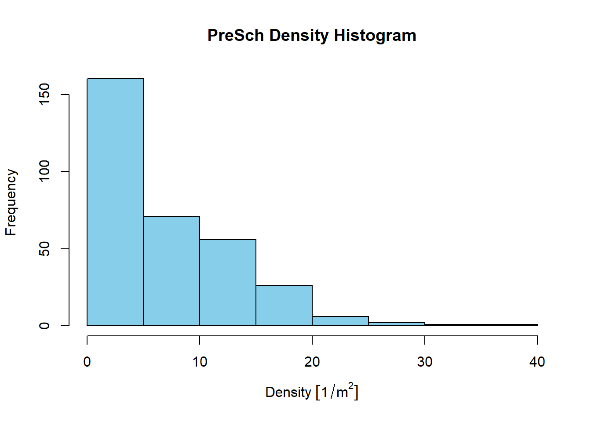

pacman::p_load(sf, tidyverse)Hands-on Exercise 1
Agenda
- Data acquistion
- Understanding the different files
- Simple Feature Packages
- Tidyverse Packages
- Plotting maps
Data Acquisition
Collecting information from these website below:
data.gov.sg
https://datamall.lta.gov.sg/content/datamall/en.html
http://insideairbnb.com/get-the-data/
Understanding the difference between geospatial and aspatial data:
Geospatial Data:
Definition: Geospatial data, also known as spatial data, refers to information that has a geographic or spatial component. It involves the representation of objects, features, or phenomena that exist in or on the Earth’s surface and can be located relative to a coordinate system.
Examples: Maps, GPS coordinates, satellite imagery, shapefiles, and any data associated with a specific location on the Earth.
Aspatial Data:
Definition: Aspatial data, also known as non-spatial data, lacks a specific geographic or spatial component. It includes information that is not inherently tied to a particular location on the Earth’s surface.
Examples: Tabular data, spreadsheets, demographic information, temperature readings, and any data that doesn’t inherently involve spatial coordinates.
To summarise, the difference lies in whether or not the data is tied to geographical location.
Understanding the different files
Below are the different files:
ESRI shapefile format
kml file
ESRI Shapefile Format
The ESRI Shapefile format is a popular geospatial vector data format developed by ESRI (Environmental Systems Research Institute), a company that provides Geographic Information System (GIS) software and solutions. The shapefile format is widely used for storing and exchanging geospatial data, and it has become a de facto standard in the GIS community.
Understanding components of ESRI Shapefile:
- Geometry Types:
- A shapefile can store different types of vector geometries, including points, lines (or polylines), and polygons. Each geometry type is associated with a set of coordinates that define the shape’s location and structure.
- Attribute Data:
- In addition to the spatial information, shapefiles can contain attribute data associated with each spatial feature. This attribute data is typically stored in a separate database file (.dbf) and can include information such as names, IDs, or any other descriptive attributes for the features.
- Multiple Files:
- A complete shapefile dataset consists of several files with different extensions. The main files include: .shp: Contains the geometry information. .shx: Contains the shape index data. .dbf: Stores attribute data in a tabular format. .prj: Specifies the coordinate system and projection information. Other auxiliary files (.sbn, .sbx, .shp.xml, etc.) may also be present.
- Projection Information:
- The shapefile format allows for the inclusion of projection information in the .prj file, specifying the coordinate system and projection used for the spatial data. This ensures that spatial features are correctly located on the Earth’s surface.
- Compatibility:
- Shapefiles are widely supported by various GIS software packages, making them easy to share and exchange among different systems. Many GIS applications, including ESRI’s ArcGIS, QGIS, and others, can read and write shapefiles.
To work with shapefiles in R, you can use the sf package, as mentioned in a previous response. The sf package provides functions for reading, writing, and manipulating spatial data in the form of simple features, and it is compatible with the ESRI shapefile format.
kml File
A KML (Keyhole Markup Language) file is a type of XML (eXtensible Markup Language) file format used to express geographic annotation and visualization within three-dimensional Earth browsers. KML files are commonly associated with mapping applications, GIS (Geographic Information System) software, and online mapping services. The format was developed by Keyhole Inc., which was later acquired by Google.
Key features of KML files include:
Geospatial Information:
- KML files are used to represent geospatial data, including points, lines, polygons, and images, on the Earth’s surface. They can contain information such as coordinates, placemarks, paths, and 3D models.
XML Structure:
- KML files are XML documents, meaning they use a hierarchical structure of tags to organize and describe geographic information. The XML format makes it human-readable and easy to parse by machines.
Placemarks and Features:
- KML files often include placemarks, which mark specific points on the Earth’s surface and may include additional information such as names, descriptions, and styles. Other features like paths and polygons are also commonly used to represent linear features or enclosed areas.
Styling and Visualization:
- KML supports the styling of features, allowing users to define the appearance of points, lines, and polygons. This includes specifying colors, icons, labels, and other visual attributes.
Compatibility:
- KML is widely supported by various mapping and GIS applications, including Google Earth, Google Maps, and many other GIS software packages. This makes it a common choice for sharing geographic data.
Extension Support:
- KML supports extensions, allowing users to include additional custom data and attributes beyond the core KML specification. This flexibility makes it suitable for various applications and use cases. To view or interact with KML files, you can use tools like Google Earth, which provides a user-friendly interface for exploring geospatial data in a 3D environment. Many GIS software packages also support the import and export of KML files, allowing for integration into broader geospatial workflows.
In R, you can use packages like sf or plotKML to work with KML files and integrate them into your geospatial analyses and visualizations.
Understanding the difference between ESRI Shapefile and KML
KML (Keyhole Markup Language) and Shapefile are both file formats used for storing and exchanging geospatial data, but they have some key differences in terms of structure, capabilities, and use cases.
Here’s a comparison between KML and Shapefile:
File Format and Structure:
KML: KML is an XML-based file format. It uses tags and attributes to represent geographic features, attributes, and styling information. KML files are human-readable and can be easily edited with a text editor. They are well-suited for representing geographic data in a hierarchical and descriptive manner.
Shapefile: A Shapefile is a set of files with different extensions (.shp, .shx, .dbf, .prj, etc.) that collectively store both spatial and attribute data. The .shp file contains geometric data, while the .dbf file stores attribute data in a tabular format. The shapefile format is more structured and relies on binary files for geometry.
Geometry Types:
KML: Supports points, lines, polygons, 3D models, and other geometries. It is versatile and can represent both 2D and 3D spatial features.
Shapefile: Supports points, lines, and polygons, but does not inherently support 3D geometries. It’s primarily used for 2D vector data.
Attributes and Database:
KML: Attributes are included within the KML file itself, typically in a element or as attributes of specific features. The structure is less rigid, and attributes can be added flexibly.
Shapefile: Attribute data is stored in a separate .dbf file. The tabular structure allows for a more organized representation of attribute information.
Styling and Visualization:
KML: Provides rich styling options, allowing users to define colors, icons, labels, and other visual attributes for individual features. Styling information is often embedded within the KML file.
Shapefile: Styling is typically handled by the GIS software reading the shapefile. The shapefile format itself does not store styling information.
Software Compatibility:
KML: Widely supported by various mapping and GIS applications, including Google Earth and Google Maps. Many GIS software packages can import and export KML files.
Shapefile: A widely supported format in the GIS community. Most GIS software, including ESRI’s ArcGIS, QGIS, and others, can read and write shapefiles.
Use Cases:
KML: Often used for visualizing and sharing geographic data on online platforms, virtual globes, and web mapping applications. Suitable for applications where human-readable representation is important.
Shapefile: Commonly used for more complex GIS workflows, analysis, and data storage. It is a well-established format in the GIS community and is suitable for a wide range of applications.
Ultimately, the choice between KML and Shapefile depends on the specific requirements of a given project and the tools and applications you plan to use. Each format has its strengths and is better suited to certain use cases.
Understanding SF packages and Tidyverse
sf Package:
Purpose: The sf package is specifically designed for handling spatial data, focusing on spatial vector data in the form of simple features. It provides a framework for representing and manipulating spatial geometries (points, lines, polygons) along with associated attribute data.
Functionality: The primary goal of sf is to work with geographic information, conduct spatial analysis, and create visualizations of spatial data. It supports operations such as spatial joins, overlays, and transformations.
Example Use Case: Reading, analyzing, and visualizing shapefiles, GeoJSON files, or other spatial data formats.
Tidyverse Collection:
Purpose: The tidyverse is not a single package but a collection of R packages, including ggplot2, dplyr, tidyr, and others. The tidyverse is centered around the principles of tidy data and a consistent, readable syntax for data manipulation and visualization.
Functionality: The tidyverse provides a set of packages that work together seamlessly to facilitate data cleaning, reshaping, analysis, and visualization. It promotes a workflow where data is organized in a tidy format (each variable is a column, each observation is a row).
Example Use Case: Cleaning and reshaping tabular data, creating complex and customized plots using ggplot2, and using the %>% pipe operator for chaining operations in a readable manner.
Simple Feature Packages
Understanding what Sf packages are used for: Importing, managing, and processing geospatial data.
p_load
The code below, shows how p_load helps to install and load sf and tidyverse pacages into R environment.
st_read
Usage of st_read: To import geospatial data into R.
Things to note: for st_read, you dont have to mention the filename extension
Importing polygon feature data in Shapefile into R:
mpsz = st_read(dsn = "../../data/Week1/geospatial",
layer = "MP14_SUBZONE_WEB_PL")Reading layer `MP14_SUBZONE_WEB_PL' from data source
`C:\kllygh\IS415-GAA\data\Week1\geospatial' using driver `ESRI Shapefile'
Simple feature collection with 323 features and 15 fields
Geometry type: MULTIPOLYGON
Dimension: XY
Bounding box: xmin: 2667.538 ymin: 15748.72 xmax: 56396.44 ymax: 50256.33
Projected CRS: SVY21Importing polyline feature data in shapefile form into R:
cyclingpath = st_read(dsn = "../../data/Week1/geospatial",
layer = "CyclingPathGazette")Reading layer `CyclingPathGazette' from data source
`C:\kllygh\IS415-GAA\data\Week1\geospatial' using driver `ESRI Shapefile'
Simple feature collection with 2558 features and 2 fields
Geometry type: MULTILINESTRING
Dimension: XY
Bounding box: xmin: 11854.32 ymin: 28347.98 xmax: 42626.09 ymax: 48948.15
Projected CRS: SVY21Importing GIS data from KML file into R:
preschool = st_read("../../data/Week1/geospatial/PreSchoolsLocation.kml")Reading layer `PRESCHOOLS_LOCATION' from data source
`C:\kllygh\IS415-GAA\data\Week1\geospatial\PreSchoolsLocation.kml'
using driver `KML'
Simple feature collection with 2290 features and 2 fields
Geometry type: POINT
Dimension: XYZ
Bounding box: xmin: 103.6878 ymin: 1.247759 xmax: 103.9897 ymax: 1.462134
z_range: zmin: 0 zmax: 0
Geodetic CRS: WGS 84st_geometry()
Usage: This function is often used to retrieve the actual point, line, or polygon coordinates from a spatial dataset.
In the context of R programming and spatial data analysis, sf_object typically refers to an object created using the sf package, which is specifically designed for handling spatial data in the form of simple features. The sf package provides a framework for representing and manipulating spatial vector data.
st_geometry(mpsz)Geometry set for 323 features
Geometry type: MULTIPOLYGON
Dimension: XY
Bounding box: xmin: 2667.538 ymin: 15748.72 xmax: 56396.44 ymax: 50256.33
Projected CRS: SVY21
First 5 geometries:Projection transformation
Usage: Projection transformation, often simply referred to as “projection,” is a process used in cartography (the study and practice of map-making) and Geographic Information Systems (GIS) to convert spatial data from one coordinate reference system to another. This transformation is necessary when data collected or represented in one coordinate system needs to be displayed or analyzed in a different coordinate system.
st_crs()
Usage: This function is used to extract the CRS information from an sf object.
st_crs(mpsz)Coordinate Reference System:
User input: SVY21
wkt:
PROJCRS["SVY21",
BASEGEOGCRS["SVY21[WGS84]",
DATUM["World Geodetic System 1984",
ELLIPSOID["WGS 84",6378137,298.257223563,
LENGTHUNIT["metre",1]],
ID["EPSG",6326]],
PRIMEM["Greenwich",0,
ANGLEUNIT["Degree",0.0174532925199433]]],
CONVERSION["unnamed",
METHOD["Transverse Mercator",
ID["EPSG",9807]],
PARAMETER["Latitude of natural origin",1.36666666666667,
ANGLEUNIT["Degree",0.0174532925199433],
ID["EPSG",8801]],
PARAMETER["Longitude of natural origin",103.833333333333,
ANGLEUNIT["Degree",0.0174532925199433],
ID["EPSG",8802]],
PARAMETER["Scale factor at natural origin",1,
SCALEUNIT["unity",1],
ID["EPSG",8805]],
PARAMETER["False easting",28001.642,
LENGTHUNIT["metre",1],
ID["EPSG",8806]],
PARAMETER["False northing",38744.572,
LENGTHUNIT["metre",1],
ID["EPSG",8807]]],
CS[Cartesian,2],
AXIS["(E)",east,
ORDER[1],
LENGTHUNIT["metre",1,
ID["EPSG",9001]]],
AXIS["(N)",north,
ORDER[2],
LENGTHUNIT["metre",1,
ID["EPSG",9001]]]]st_set_crs()
Usage: To assign the correct EPSG code to mpsz data frame, st_set_crs() of sf package is used as shown in the code chunk below. when you want to update the CRS metadata associated with an sf object without transforming the actual coordinates. This is useful when you know that the object is in a different CRS than the metadata suggests.
- You use st_set_crs() when you want to assign or update the CRS of an sf object. This function does not perform any geometric transformation; it only updates the metadata associated with the object to indicate the new CRS.
mpsz3414 <- st_set_crs(mpsz, 3414)st_transform()
Usage: when you want to transform the spatial coordinates of an sf object from one CRS to another. This is necessary when you have spatial data in one CRS, but you need to work with it in a different CRS.
- You use st_transform() when you want to actually change the coordinates of the geometries to be consistent with a different CRS. This involves a mathematical transformation of the spatial features.
preschool3414 <- st_transform(preschool,
crs = 3414)Tidyverse Packages
Understanding what Tidyverse packages are used for: Performing data science tasks such as importing, wrangling and visualising data.
glimpse() dplyr package
Usage: glimpse() is a function provided by the dplyr package, which is part of the tidyverse collection of R packages. The glimpse() function is used for printing a concise summary of a data frame or tibble, including information about the data types of columns and a preview of the first few rows of the data.
glimpse(mpsz)Rows: 323
Columns: 16
$ OBJECTID <int> 1, 2, 3, 4, 5, 6, 7, 8, 9, 10, 11, 12, 13, 14, 15, 16, 17, …
$ SUBZONE_NO <int> 1, 1, 3, 8, 3, 7, 9, 2, 13, 7, 12, 6, 1, 5, 1, 1, 3, 2, 2, …
$ SUBZONE_N <chr> "MARINA SOUTH", "PEARL'S HILL", "BOAT QUAY", "HENDERSON HIL…
$ SUBZONE_C <chr> "MSSZ01", "OTSZ01", "SRSZ03", "BMSZ08", "BMSZ03", "BMSZ07",…
$ CA_IND <chr> "Y", "Y", "Y", "N", "N", "N", "N", "Y", "N", "N", "N", "N",…
$ PLN_AREA_N <chr> "MARINA SOUTH", "OUTRAM", "SINGAPORE RIVER", "BUKIT MERAH",…
$ PLN_AREA_C <chr> "MS", "OT", "SR", "BM", "BM", "BM", "BM", "SR", "QT", "QT",…
$ REGION_N <chr> "CENTRAL REGION", "CENTRAL REGION", "CENTRAL REGION", "CENT…
$ REGION_C <chr> "CR", "CR", "CR", "CR", "CR", "CR", "CR", "CR", "CR", "CR",…
$ INC_CRC <chr> "5ED7EB253F99252E", "8C7149B9EB32EEFC", "C35FEFF02B13E0E5",…
$ FMEL_UPD_D <date> 2014-12-05, 2014-12-05, 2014-12-05, 2014-12-05, 2014-12-05…
$ X_ADDR <dbl> 31595.84, 28679.06, 29654.96, 26782.83, 26201.96, 25358.82,…
$ Y_ADDR <dbl> 29220.19, 29782.05, 29974.66, 29933.77, 30005.70, 29991.38,…
$ SHAPE_Leng <dbl> 5267.381, 3506.107, 1740.926, 3313.625, 2825.594, 4428.913,…
$ SHAPE_Area <dbl> 1630379.27, 559816.25, 160807.50, 595428.89, 387429.44, 103…
$ geometry <MULTIPOLYGON [m]> MULTIPOLYGON (((31495.56 30..., MULTIPOLYGON (…read_csv() from readr package
Usage: primary purpose is to read tabular data from CSV (Comma-Separated Values) files. CSV files are a common format for storing tabular data, and they can be used for both spatial and non-spatial datasets.
Things to note: When providing the path here, include the filename and the file extension.
listings <- read_csv("../../data/Week1/aspatial/listings.csv")list() of base R
Usage: is a base R function used to create a list object. Lists in R can contain elements of different types, such as vectors, data frames, functions, or even other lists. It is a fundamental data structure in R for organizing and storing heterogeneous data.
list(listings) [[1]]
# A tibble: 3,457 × 18
id name host_id host_name neighbourhood_group neighbourhood latitude
<dbl> <chr> <dbl> <chr> <chr> <chr> <dbl>
1 71609 Villa in… 367042 Belinda East Region Tampines 1.35
2 71896 Home in … 367042 Belinda East Region Tampines 1.35
3 71903 Home in … 367042 Belinda East Region Tampines 1.35
4 275343 Rental u… 1439258 Kay Central Region Bukit Merah 1.29
5 275344 Rental u… 1439258 Kay Central Region Bukit Merah 1.29
6 289234 Home in … 367042 Belinda East Region Tampines 1.34
7 294281 Rental u… 1521514 Elizabeth Central Region Newton 1.31
8 324945 Rental u… 1439258 Kay Central Region Bukit Merah 1.29
9 330095 Rental u… 1439258 Kay Central Region Bukit Merah 1.29
10 369141 Place to… 1521514 Elizabeth Central Region Newton 1.31
# ℹ 3,447 more rows
# ℹ 11 more variables: longitude <dbl>, room_type <chr>, price <dbl>,
# minimum_nights <dbl>, number_of_reviews <dbl>, last_review <date>,
# reviews_per_month <dbl>, calculated_host_listings_count <dbl>,
# availability_365 <dbl>, number_of_reviews_ltm <dbl>, license <chr>When to use list() and glimpse()?
Use glimpse() when you want to inspect the structure of a data frame or tibble.
Use list() when you want to create a list to organize and store different types of elements.
Creating a simple feature data frame from an aspatial data frame
st_as_sf() sf package
listings_sf <- st_as_sf(listings,
coords = c("longitude", "latitude"),
crs=4326) %>%
st_transform(crs = 3414)
glimpse(listings_sf)Rows: 3,457
Columns: 17
$ id <dbl> 71609, 71896, 71903, 275343, 275344, 28…
$ name <chr> "Villa in Singapore · ★4.44 · 2 bedroom…
$ host_id <dbl> 367042, 367042, 367042, 1439258, 143925…
$ host_name <chr> "Belinda", "Belinda", "Belinda", "Kay",…
$ neighbourhood_group <chr> "East Region", "East Region", "East Reg…
$ neighbourhood <chr> "Tampines", "Tampines", "Tampines", "Bu…
$ room_type <chr> "Private room", "Private room", "Privat…
$ price <dbl> 150, 80, 80, 64, 78, 220, 85, 75, 69, 7…
$ minimum_nights <dbl> 92, 92, 92, 60, 60, 92, 92, 60, 60, 92,…
$ number_of_reviews <dbl> 19, 24, 46, 20, 16, 12, 131, 17, 5, 81,…
$ last_review <date> 2020-01-17, 2019-10-13, 2020-01-09, 20…
$ reviews_per_month <dbl> 0.13, 0.16, 0.30, 0.15, 0.11, 0.09, 0.9…
$ calculated_host_listings_count <dbl> 5, 5, 5, 51, 51, 5, 7, 51, 51, 7, 7, 1,…
$ availability_365 <dbl> 55, 91, 91, 183, 183, 54, 365, 183, 183…
$ number_of_reviews_ltm <dbl> 0, 0, 0, 0, 3, 0, 0, 1, 2, 0, 0, 0, 0, …
$ license <chr> NA, NA, NA, "S0399", "S0399", NA, NA, "…
$ geometry <POINT [m]> POINT (41972.5 36390.05), POINT (…Plotting maps
Plotting geospatial maps
plot(mpsz)
plot(st_geometry(mpsz))
plot(mpsz["PLN_AREA_N"])
Geoprocessing with sf package
Buffer
Definition: A buffer in GIS is a defined zone or area created around or within a geographic feature such as a point, line, or polygon.
Why do we use buffer?
Buffers help answer questions like “What are the features within a certain distance from a given point?”
“How many road segments intersect a specific buffer zone?”
Buffering can also be used to identify if a geographic feature is found within proximity to another geographic feature
a business may use buffering along with census data to see the demographics of customers that live within a certain distance of their store.
st_buffer()
buffer_cycling <- st_buffer(cyclingpath,
dist=5, nQuadSegs = 30)st_area()
Explanation of the code below: This code is using the sf (Simple Features) package in R to calculate and add a new column named AREA to a spatial object named buffer_cycling. The AREA column will store the calculated areas of each geometry in the buffer_cycling object.
buffer_cycling$AREA <- st_area(buffer_cycling)sum()
To calculate the total land involved
sum(buffer_cycling$AREA)1774367 [m^2]Point-in-polygon count
Example 1
length() and st_intersects()
st_intersects(x, y, sparse = FALSE, …) && intersects_result <- st_intersects(points, polygon)
x and y: The sf objects for which intersection is being tested. These can be simple features (points, lines, polygons, etc.) or geometries.
sparse: A logical parameter indicating whether to use a sparse matrix representation for the result. If sparse is set to TRUE, the result will be a sparse matrix.
mpsz3414$`PreSch Count`<- lengths(st_intersects(mpsz3414, preschool3414))Summary()
summary(mpsz3414$`PreSch Count`) Min. 1st Qu. Median Mean 3rd Qu. Max.
0.00 0.00 4.00 7.09 10.00 72.00 top_n()
top_n(mpsz3414, 1, `PreSch Count`)Simple feature collection with 1 feature and 16 fields
Geometry type: MULTIPOLYGON
Dimension: XY
Bounding box: xmin: 39655.33 ymin: 35966 xmax: 42940.57 ymax: 38622.37
Projected CRS: SVY21 / Singapore TM
OBJECTID SUBZONE_NO SUBZONE_N SUBZONE_C CA_IND PLN_AREA_N PLN_AREA_C
1 189 2 TAMPINES EAST TMSZ02 N TAMPINES TM
REGION_N REGION_C INC_CRC FMEL_UPD_D X_ADDR Y_ADDR SHAPE_Leng
1 EAST REGION ER 21658EAAF84F4D8D 2014-12-05 41122.55 37392.39 10180.62
SHAPE_Area geometry PreSch Count
1 4339824 MULTIPOLYGON (((42196.76 38... 72Example 2
st_area() and mutate()
Things to note:
mpsz3414 %>% st_area()is equivalent tost_area(mpsz3414).
Explanation of the code:
mutate(): This function is from the dplyr package and is used for creating or modifying columns in a data frame. It allows you to add new columns or modify existing ones based on specified calculations.
mpsz3414 %>% ...: The pipe operator(%>%)is used to pass thempsz3414data frame to the subsequent mutate() function. This creates a readable and sequential flow of operations.df <- df %>% mutate(Doubled = Value * 2)
mpsz3414$Area <- mpsz3414 %>%
st_area()
mpsz3414 <- mpsz3414 %>%
mutate(`PreSch Density` = `PreSch Count`/Area * 1000000)Exploratory Data Analysis
Explanation of the code:
- This part of the code is specifying the column of interest. mpsz3414$PreSch Density`
refers to the "PreSch Density" column in the mpsz3414 data frame. The backticks () are used to denote column names that include spaces or special characters.
hist(mpsz3414$`PreSch Density`)
# Assuming 'mpsz3414' is a data frame with a column 'PreSch Density'
hist(mpsz3414$`PreSch Density`, main = "PreSch Density Histogram", xlab = "Density", ylab = "Frequency", col = "skyblue")
Further customisation of the codes:
ggplot(data=mpsz3414,
aes(x= as.numeric(`PreSch Density`)))+
geom_histogram(bins=20,
color="black",
fill="light blue") +
labs(title = "Are pre-school even distributed in Singapore?",
subtitle= "There are many planning sub-zones with a single pre-school, on the other hand, \nthere are two planning sub-zones with at least 20 pre-schools",
x = "Pre-school density (per km sq)",
y = "Frequency")
ggplot(data=mpsz3414,
aes(y = `PreSch Count`,
x= as.numeric(`PreSch Density`)))+
geom_point(color="black",
fill="light blue") +
xlim(0, 40) +
ylim(0, 40) +
labs(title = "",
x = "Pre-school density (per km sq)",
y = "Pre-school count")